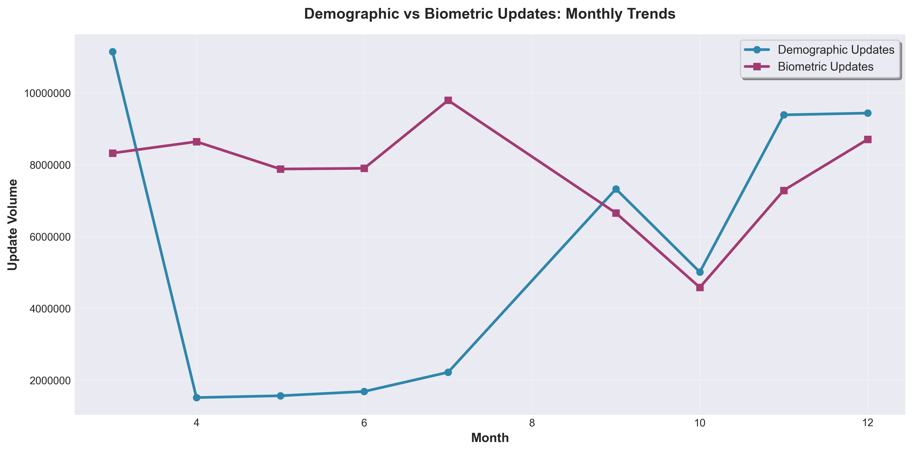
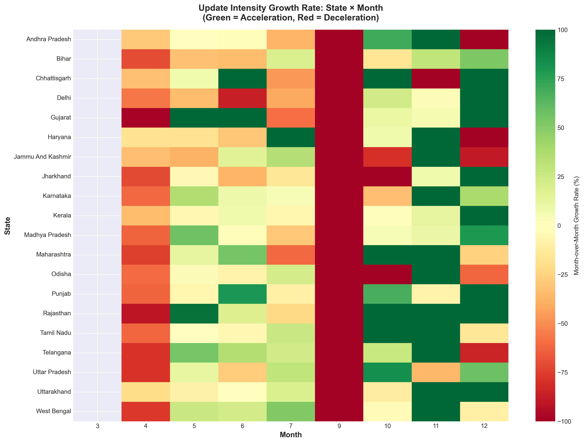
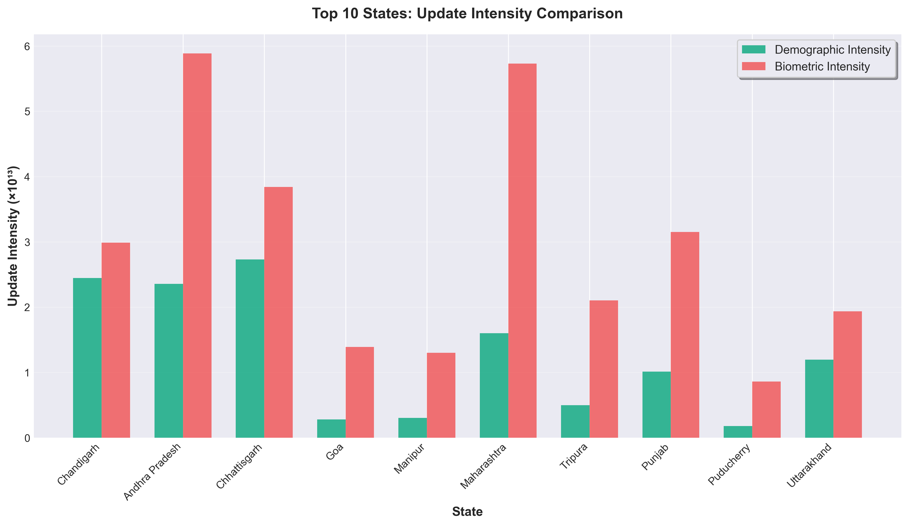
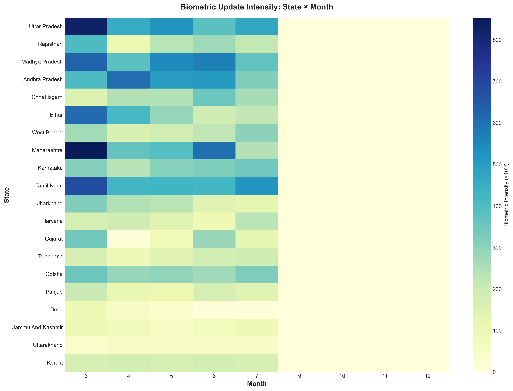
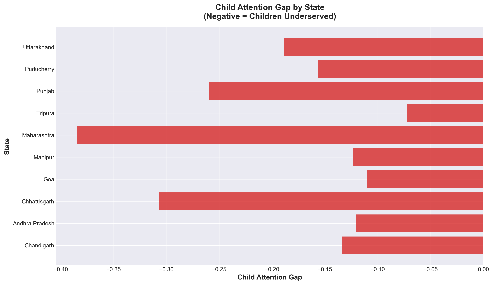
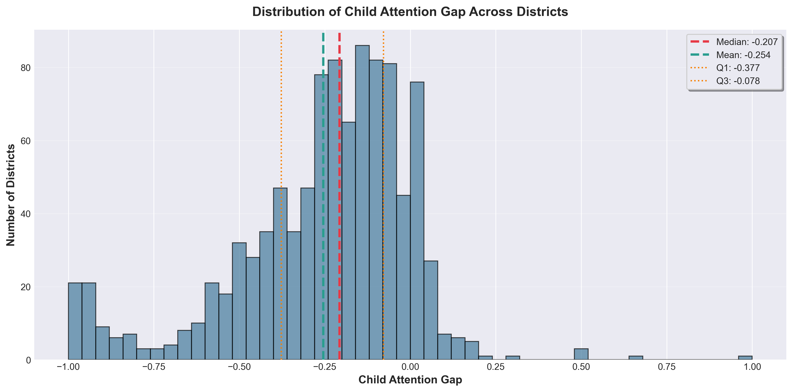
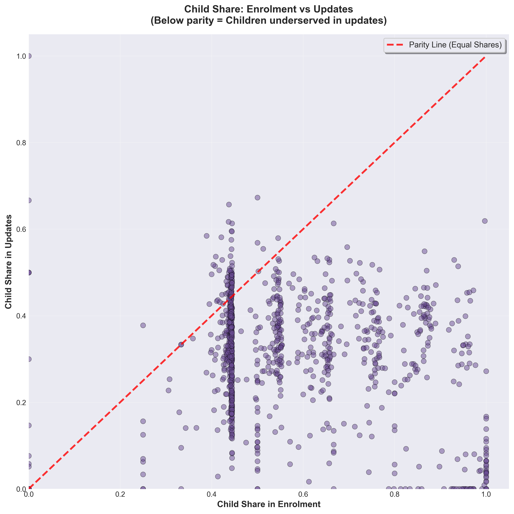
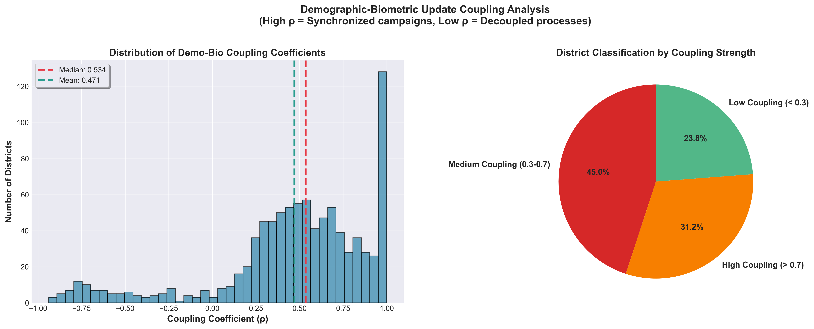
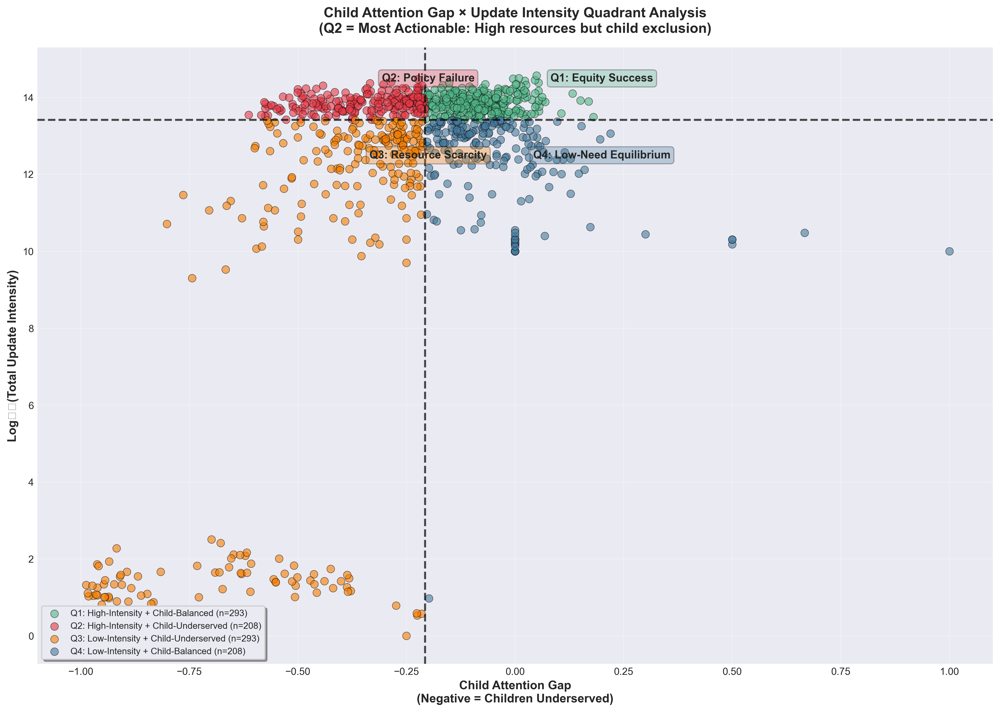

Aadhaar Administrative Analytics
Forensic Analysis of Enrolment & Update Patterns
12-Month Observation Window
System Overview
National-level administrative interaction patterns and system maturity indicators
5.44M
Total Enrolments
Active
119.1M
Total Updates
21.9x Ratio
49.3M
Demographic Updates
41.4% of updates
69.8M
Biometric Updates
58.6% of updates
54
States Analyzed
1,041
Districts
-22.8%
Avg Child Gap
22.8%
Underserved Regions
Update Composition
Top 10 States by Update Volume
Monthly Transaction Volumes: Demographic vs Biometric Updates

Key Insights
- System has transitioned from enrolment-driven to maintenance-phase operations
- Biometric updates dominate system throughput, indicating verification mandates
- Temporal volatility suggests campaign-based rather than continuous delivery
- Month 3 disruption is system-wide, not region-specific
Temporal Analysis
Time-series patterns, growth dynamics, and operational stability indicators
Monthly Update Trends (Interactive)
Intensity Growth Rate (State × Month)

Temporal Stability Index by State

Spatial Patterns
State-level heterogeneity, regional concentration, and geographic disparities
State-wise Update Intensity Comparison
Top 10 States: Update Intensity (Population-Normalized)

Demographic Update Intensity: State × Month

Biometric Update Intensity: State × Month

Demographic Equity Analysis
Child attention gaps, age-based exclusion patterns, and equity indicators
Child Attention Gap by State (Interactive)
Child Attention Gap by State

Distribution of Child Attention Gap

Child Share: Enrolment vs Updates

Minor Share: Demographic vs Biometric

District Clustering & Typology
Administrative regime classification and district-level behavioral patterns
District Cluster Distribution
District Clusters: Enrolment vs Update Intensity

Cluster 0: Ongoing enrolment frontiers (frontier regions)
Cluster 1-2: Mature maintenance systems (modal state)
Cluster 3: High-verification zones (urban centers)
Cluster 4: Dormant/saturated districts (remote areas)
Advanced Analytics
Cross-domain correlations, coupling analysis, and equity-capacity matrices
Demographic-Biometric Coupling

Child Gap × Update Intensity Quadrants

Key Metrics Correlation
Data Tables
Explore raw data with sorting, filtering, and export capabilities
State-wise Summary
| State | Enrolments | Demo Updates | Bio Updates | Total Updates | Child Gap | Intensity |
|---|
Top 20 Critical Child Gap Districts
| Rank | State | District | Child Gap | Severity | Recommendation |
|---|
Cluster Distribution Details
Cluster 0: Enrolment Frontiers
~80 districtsOngoing enrolment zones, frontier regions
Cluster 1-2: Mature Systems
~560 districtsModal administrative state, maintenance phase
Cluster 3: High Verification
~200 districtsUrban centers, high compliance regions
Cluster 4: Dormant
~60 districtsRemote areas, completed saturation